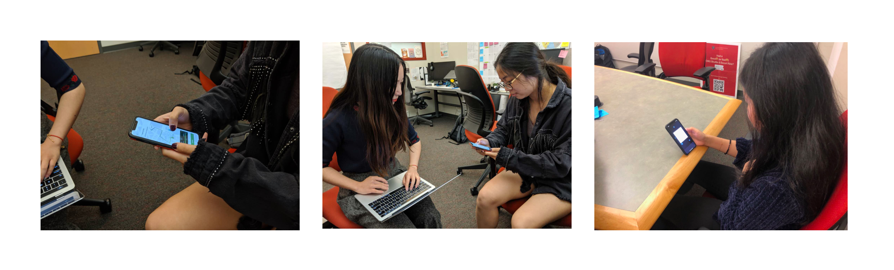
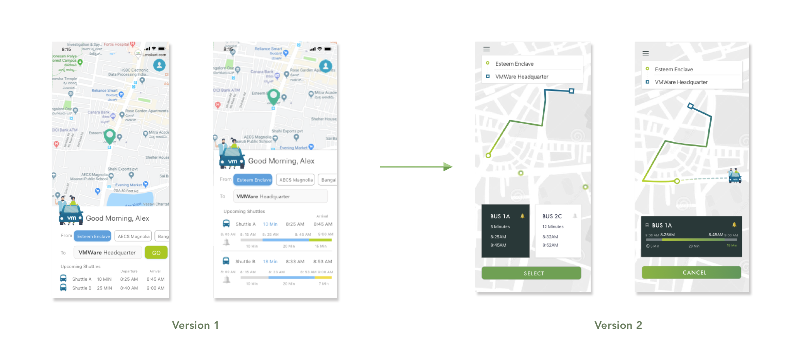

Team Individual Project (SOLO)
Role UX Designer / Researcher
Tool Pen & Pencil
Sketch
Principle
After Effects
Duration One Week
Currently VMWare has close to 30,000 employees around the world. While most of the employees drive to work, some of them commute using VMWare shuttle. In Bangalore, India, there are approximately 500 active users of the company’s shuttle program. To ensure the safety of the passengers and to remain compliant with local laws and regulations, VMware needs to track every employee’s usage of the shuttle. For example – at what time and at which stop do they board a shuttle? Where and when do they get off the shuttle?
After further dive into background research, the design question eventually became: How might we track employee shuttle usage and improve current transportation experience?
01.
Interactive Screens to Onboard Users
After users log in, they can sync the earliest event from their calendar or manually enter their work start time of the day. Our system can will provide recommended shuttle to take based on their schedule.
02.
Quick Access to All Available Routes
With all routes formatted in a row, users can drag and see all available routes. They can view the most critical information, such as bus route on the map, waiting time, and destination arrival time. Based on user's pre-set work start time, the system will provide suggested bus to take to ensure employees arrive on their desired time.
03.
Real Time Routes Comparison
Users are able to compare routes by clicking on the route card or the stops on the map to see detailed route information.
04.
Share Route Info and View Details
Users are able to view interactive route details after they click on "Select". At the same time, they will send information to the REM team such as when and where they get on the shuttle. They will also receive alerts and push notifications when the desingated bus is arriving.
05.
Interactive Data Visualization
The system will provide aggregated data visualization for each category. The Transportation Team is able to view data based on data type, such as total shuttle usage based on day of the week, stops users take and the time they get on the bus. The REM is able to view more detailed information when they click in the graph.
To fully understand the task, I started by mapping out Who, Why, and What questions on canvas to understand: who are our target audience, why are we designing this service, and in what context would our users use this service.
I also started by writing down some keywords, and my immediate thoughts on them. Based on the results, I developed some main questions to investigate for research:
Research: Survey and User Interviews
To get a general idea of how might users take shuttle services to commute to work or school, I sent out surveys to CMU students and faculties who commute to work or school. In addition, I conducted in-depth interview with three current CMU faculties who take shuttle services to work as well as shuttle drivers to get more insights. I also conducted contextual inquiry to observe users during their shuttle process.
Have you used shuttle / escort services before?
Most users have used shuttle / escort services before. They also indicated that they use shuttle / transportation services around once or twice a week on average.
Do you use any tools to help you with your commute process?
Through the survey, 65.5% of users indicated that they use mobile apps to track upcoming bus schedule. For those users who don't use any tools, they expressed that they did not know which tools they could use and would love to learn more.
What do you think could be improved in shuttle services?
Users indicated that they would love to keep track of real-time bus information. They wanted easy way to access and find information about the service, such as the time schedule. They also found that buses are not always on time, so they would appreciate to have a range of arrival time so they won't be late to work or school.
Design Opportunity
Keeping in mind the survey and in-depth interview results, I identified my design opportunities to track shuttle usage in an unobtrusive way and improve current shuttle transportation experience. I focused on my stakeholder's values and goals to access shuttle information. Specifically, here are 3 design goals:
Based on my design goals and user persona, I proposed a potential user flow. I explored current flow of transportation apps such as Transit and built my user flow from there to give users a familiar context, but also add new features such to encourage my stakeholder VMWare employees to send signals of their shuttle usage. At the same time, help users onboard transportation services.
Based on the user flow, needs from user persona and opportunity areas, I started to brainstorm and sketched out quick ideas to help me structure user flows and capture pain points. The screens includes features that I wanted to design for 3 design goals mentioned in Design Opportunity.
In order to validate design with users, I conducted testings using Think Aloud method to have user walk through the flow and test on current version of interfaces. I was able to find some useful insights for me to move forward with the next iteration.
During Think Aloud, user expressed frustrations reading all the information at once. Since there was only limited space, user encountered problems focusing on the important content. Users also struggled with the size of the buttons. There are too many interactive elements on one page. According to Fitt's Law, things are larger and closer are easier to hit on. Conversely, when there are too many elements at once, users might click on wrong features.
Additionally, users expressed during user interview that they would love to see real-time bus information. They also expressed concerns regarding shuttle schedule accuracy which might cause them late to work or school. They also wanted to see different shuttle options when their location is in the middle of two stops. In the end, my ultimate goal was to design shuttle services that could 1)provide accurate signals to REW team, 2) improve current shuttle experience for employees, and lastly 3) design data visualizations that are easy to access and get insights for users.
After iterations on wireframes and Think Aloud testins with users, I reached my final design solution : VMWare Shuttle application. VMWare Shuttle is an application that aims to provide signals to REW team and bring simple, useful and delightful experience to VMWare employees during their transportation process. Specifically, VMWare Shuttle has 3 Highlight Features to do so, and these key features confirm my 3 design goals based on research.
Through user interviews, most users decide on their bus schedule based on when they need to go to work (or the time of the first event of the day). Therefore, it is critical for our system to recommend bus routes if users can define when they need to work since the service is for VMWare employees only. The system can also use AI to remember user behaviors so they don't have to enter same data every time.

After users decide on which bus to take, they are able to click "select" to view more details about the certain route. At the same time, the route they will take will be recorded and later confirmed via push notifications.
Through mobile, the REW Team is able to access shuttle usage information whenever and whereever. The team is able to tap on the top navigation to switch data type. Due to time constraints, only three categories are listed in this current version. If more time were given, the entire mobile page could be scrollable to view more data at once. A desktop version could be helpful too.
Moving forward on this project, I would also love to conduct more user testings because the more iterations the better. I would love to explore more ways of error recovery. Currently, users send signals to the REW when users select a route. How would users recover from the error when they eventually choose another route or another transportation method?
I would also love to explore more ways to make the interfaces adaptive based on user behaviors. So we can reduce repeated steps and make the experience even simpler.
On the other hand, I would love to explore web version for the REW team. Maybe the team would be interested in seeing some analytics behind data, and web version of the dashboard would give me more space to provide information more comprehensivelyl.


{kind=link}
{kind=link}
{kind=link}
{kind=link}
{kind=link}
{kind=link}
{kind=link}
{kind=link}